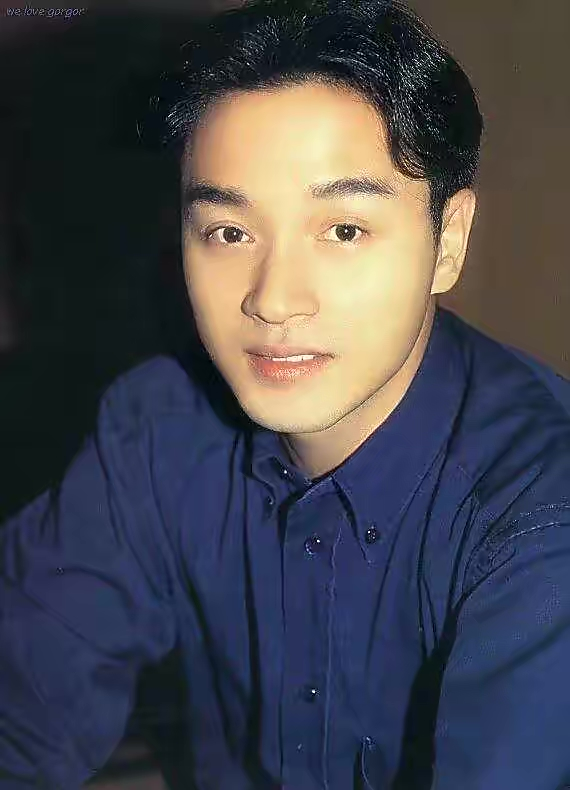

Leslie Cheung
Personal Details
City: Hong Kong
Region: Asia
Country: China
Postal: 98052-8300
Achievements
In 1977, she won the second place in the beautiful TV Asian Singing Competition in Hong Kong, thus entering the singing world. In 1983, he received attention with the song "The Wind Continues to Blow". Monica, which was sung in 1984, is the first dance music in Hong Kong that won the top ten Chinese songs and top ten powerful songs [280]. In 1986, he won the Golden Award for Powerful Songs with the song "Who resonates". In 1987, he won the Golden Award for Powerful Songs again with his song "Sleepless". Later, he became the first Cantonese singer to enter the Korean music market with his albums "Love" and "The Greatest Hits of Leslie Cheung" [2], and broke the sales record of Chinese records in Korea [3-5]. Since 1988, he has won the Most Popular Male Singer Award for the Top Ten Golden Songs for two consecutive years. Farewell to the singing world in 1989 [295].
In 1991, he won the Best Actor Award [277] with the drama "The True Story of Ah Fei". The literary film Farewell My Concubine, starring in 1993, was the first film in Chinese film history to win the Palme d'Or at the Cannes International Film Festival [8]. This film broke the box office record of mainland Chinese literary films in the United States [9-10]. With this film, he gained wide attention in the international film world [11], and won the Best Actor Award of the Japanese Film Critics Award [12], and the Special Contribution Award of the Chinese Film Performing Arts Association Award; In the same year, he served as a judge of the Tokyo International Film Festival. After returning to the music world in 1995, he no longer received competitive music awards. In 1998, he became the first Chinese actor to serve as a judge of the Berlin International Film Festival as an actor. In 1999, he won the highest honorary Golden Needle Award in Hong Kong music. In 2000, he was selected as one of the top 100 foreign actors in the 20th century in the Japanese Film Decadal [13], and won the Asia Most Outstanding Artist Award at the CCTV-MTV Music Festival in the same year [6]. In 2005, he was selected as one hundred outstanding actors in Chinese films. In 2010, he was selected as the "25 Greatest Asian Actors in the History" of CNN in the United States [278]; In the same year, he was selected as one of the "20 most famous singers/bands in the world in the past 50 years" by CNN of the United States [7]